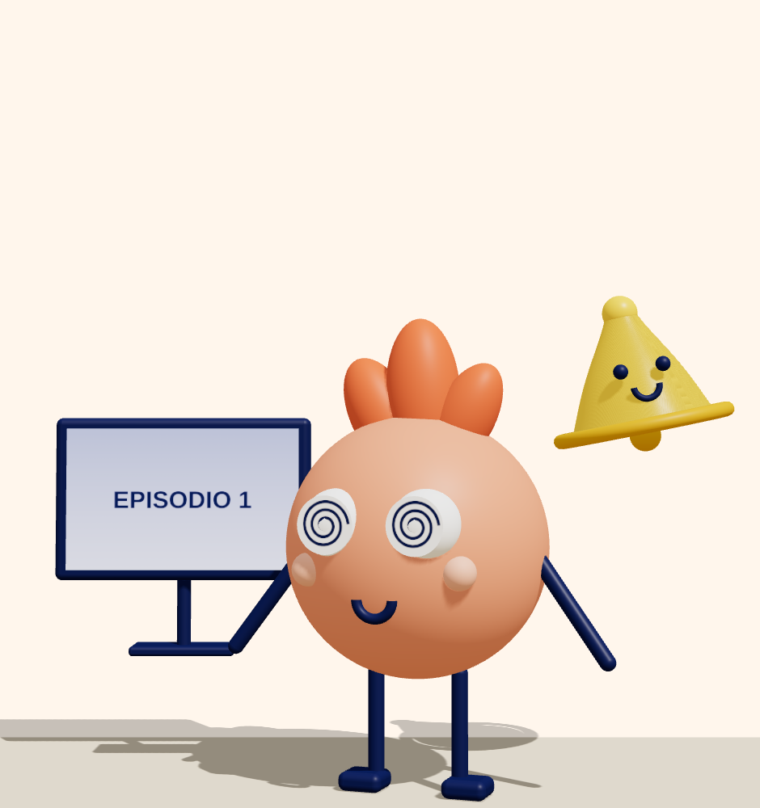

<style>
.slide{background:#1E9E9E;color:#fff}
.slide .top .brand,.slide .top .brand .we,.slide .top .brand .self{color:#fff}.slide .top .brand img{background:#fff;border-radius:12px;padding:4px}
.sticker{position:absolute;right:44px;top:22px;transform:rotate(5deg) scale(.9);transform-origin:right top;z-index:3}
.l1{font-weight:900;font-size:66px;line-height:1.0;letter-spacing:-.035em;text-shadow:5px 5px 0 #1E2B5C}
.grid4{display:grid;grid-template-columns:1fr 1fr;gap:12px}
.pnl{position:relative;border:6px solid #1E2B5C;border-radius:18px;overflow:hidden;height:500px}
.pnl img{position:absolute;inset:0;width:100%;height:100%;object-fit:cover}
.pnl svg{position:absolute;inset:0;display:block;width:100%;height:100%}
.pnl .time{position:absolute;left:10px;top:10px;background:#FFD23F;color:#1E2B5C;font-weight:900;font-size:18px;letter-spacing:.06em;padding:5px 10px;border:3px solid #1E2B5C;border-radius:8px;z-index:2}
.srcl{font-family:Literata,serif;font-size:22px;color:rgba(255,255,255,.85)}
</style>
<section class="slide" id="s1"><svg class="sticker" width="330" height="120" viewBox="0 0 330 120">
  <rect x="8" y="10" width="314" height="96" rx="48" fill="#1E2B5C" opacity=".25" transform="translate(4 6)"/>
  <rect x="8" y="10" width="314" height="96" rx="48" fill="#fff" stroke="#F09B7C" stroke-width="5"/>
  <g transform="translate(30 18)">
    <circle cx="20" cy="4" r="5" fill="#A8E6DD"/><circle cx="34" cy="-4" r="4" fill="#A8E6DD"/><circle cx="44" cy="6" r="3" fill="#A8E6DD"/>
    <path d="M18 12 h22 v20 l20 36 a8 8 0 0 1 -7 12 h-48 a8 8 0 0 1 -7 -12 l20 -36z" fill="#7FD3C8" stroke="#1E2B5C" stroke-width="4" stroke-linejoin="round"/>
    <rect x="14" y="8" width="30" height="8" rx="4" fill="#1E2B5C"/>
    <circle cx="20" cy="52" r="7" fill="#fff" stroke="#1E2B5C" stroke-width="3"/><circle cx="38" cy="52" r="7" fill="#fff" stroke="#1E2B5C" stroke-width="3"/>
    <circle cx="22" cy="54" r="3" fill="#1E2B5C"/><circle cx="36" cy="50" r="3" fill="#1E2B5C"/>
    <path d="M18 64 q11 12 22 0" fill="#1E2B5C"/>
  </g>
  <text x="208" y="52" text-anchor="middle" font-family="Nunito" font-weight="900" font-size="30" fill="#1E2B5C">Scienza</text>
  <text x="208" y="86" text-anchor="middle" font-family="Nunito" font-weight="900" font-size="30" fill="#D9592A">da ridere</text>
</svg>

  <div class="top"><div class="brand"><span><span class="we">We</span><span class="self">Self</span></span></div></div>
  <div class="stack" style="margin-top:62px;gap:24px">
    <p class="l1">Agenda e Voglia:</p>
    <div class="grid4"><div class="pnl"><span class="time">ORE 9:00</span><svg width="470" height="500" viewBox="0 0 470 500"><rect x="20" y="40" width="300" height="100" rx="22" fill="#fff" stroke="#1E2B5C" stroke-width="5"/><path d="M96.0 137 L84.0 168 L124.0 137" fill="#fff" stroke="#1E2B5C" stroke-width="5" stroke-linejoin="round"/><rect x="94.0" y="130" width="32" height="12" fill="#fff"/><text x="170.0" y="85.0" text-anchor="middle" font-family="Nunito" font-weight="900" font-size="25" fill="#1E2B5C">Oggi UNA cosa sola:</text><text x="170.0" y="115.0" text-anchor="middle" font-family="Nunito" font-weight="900" font-size="25" fill="#1E2B5C">alle 18 camminiamo.</text><rect x="250" y="150" width="200" height="90" rx="22" fill="#FFE6DC" stroke="#1E2B5C" stroke-width="5"/><path d="M296.0 237 L284.0 268 L324.0 237" fill="#FFE6DC" stroke="#1E2B5C" stroke-width="5" stroke-linejoin="round"/><rect x="294.0" y="230" width="32" height="12" fill="#FFE6DC"/><text x="350.0" y="189.6" text-anchor="middle" font-family="Nunito" font-weight="900" font-size="27" fill="#1E2B5C">UNA COSA!</text><text x="350.0" y="222.0" text-anchor="middle" font-family="Nunito" font-weight="900" font-size="27" fill="#1E2B5C">Ricevuto!</text></svg></div><div class="pnl"><span class="time">ORE 17:58</span><svg width="470" height="500" viewBox="0 0 470 500"><rect x="200" y="24" width="250" height="80" rx="22" fill="#FFF3C4" stroke="#1E2B5C" stroke-width="5"/><path d="M361.0 101 L401.0 132 L389.0 101" fill="#FFF3C4" stroke="#1E2B5C" stroke-width="5" stroke-linejoin="round"/><rect x="359.0" y="94" width="32" height="12" fill="#FFF3C4"/><text x="325.0" y="59.4" text-anchor="middle" font-family="Nunito" font-weight="900" font-size="23" fill="#1E2B5C">È uscito il</text><text x="325.0" y="87.0" text-anchor="middle" font-family="Nunito" font-weight="900" font-size="23" fill="#1E2B5C">nuovo episodio!</text><rect x="40" y="150" width="190" height="64" rx="22" fill="#FFE6DC" stroke="#1E2B5C" stroke-width="5"/><path d="M159.0 211 L199.0 242 L187.0 211" fill="#FFE6DC" stroke="#1E2B5C" stroke-width="5" stroke-linejoin="round"/><rect x="157.0" y="204" width="32" height="12" fill="#FFE6DC"/><text x="135.0" y="192.4" text-anchor="middle" font-family="Nunito" font-weight="900" font-size="26" fill="#1E2B5C">Solo UNO…</text></svg></div><div class="pnl"><span class="time">ORE 21:40</span><svg width="470" height="500" viewBox="0 0 470 500"><rect x="20" y="40" width="230" height="66" rx="22" fill="#fff" stroke="#1E2B5C" stroke-width="5"/><path d="M75.0 103 L63.0 134 L103.0 103" fill="#fff" stroke="#1E2B5C" stroke-width="5" stroke-linejoin="round"/><rect x="73.0" y="96" width="32" height="12" fill="#fff"/><text x="135.0" y="82.6" text-anchor="middle" font-family="Nunito" font-weight="900" font-size="24" fill="#1E2B5C">Avevi UNA cosa.</text><rect x="160" y="106" width="230" height="80" rx="22" fill="#FFE6DC" stroke="#1E2B5C" stroke-width="5"/><path d="M215.0 183 L203.0 214 L243.0 183" fill="#FFE6DC" stroke="#1E2B5C" stroke-width="5" stroke-linejoin="round"/><rect x="213.0" y="176" width="32" height="12" fill="#FFE6DC"/><text x="275.0" y="141.6" text-anchor="middle" font-family="Nunito" font-weight="900" font-size="22" fill="#1E2B5C">La serie aveva</text><text x="275.0" y="168.0" text-anchor="middle" font-family="Nunito" font-weight="900" font-size="22" fill="#1E2B5C">bisogno di me.</text></svg></div><div class="pnl"><span class="time">IL GIORNO DOPO</span><svg width="470" height="500" viewBox="0 0 470 500"><g transform="translate(240 112) rotate(-3)"><rect x="-205" y="-58" width="410" height="116" rx="10" fill="#fff" stroke="#1E2B5C" stroke-width="4"/><text x="0" y="-14" text-anchor="middle" font-family="Nunito" font-weight="900" font-size="23" fill="#1E9E9E">SE sono le 18 ed esce un episodio,</text><text x="0" y="20" text-anchor="middle" font-family="Nunito" font-weight="900" font-size="23" fill="#D9592A">ALLORA lo ascolto camminando.</text></g><rect x="16" y="430" width="438" height="62" rx="10" fill="#D9592A"/><text x="235" y="456" text-anchor="middle" font-family="Nunito" font-weight="900" font-size="19" fill="#fff">Chi aveva un «se… allora…» ha fatto meglio</text><text x="235" y="481" text-anchor="middle" font-family="Nunito" font-weight="900" font-size="19" fill="#fff">del 74% di chi aveva solo l'intenzione</text></svg></div></div>
  </div>
  <p class="srcl" style="margin-top:auto">Fonte: Gollwitzer &amp; Sheeran, 2006</p>
</section></body></html>